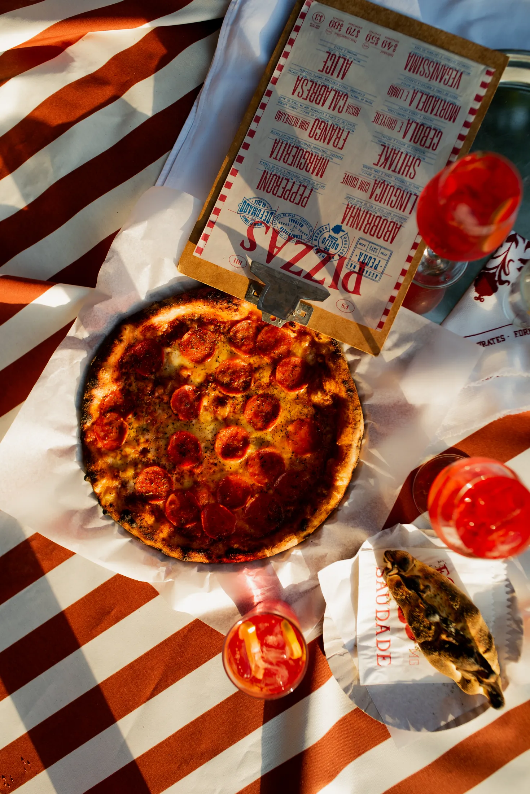
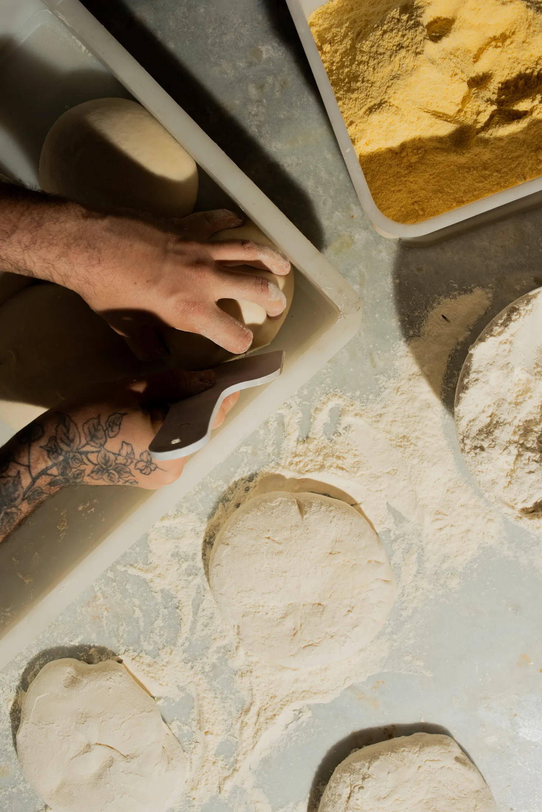
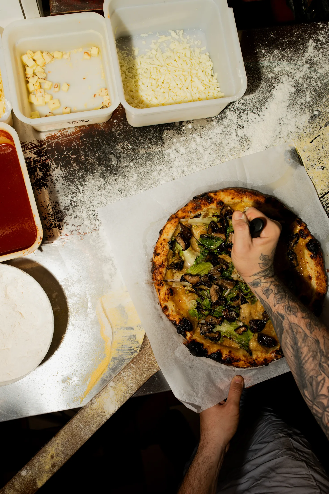
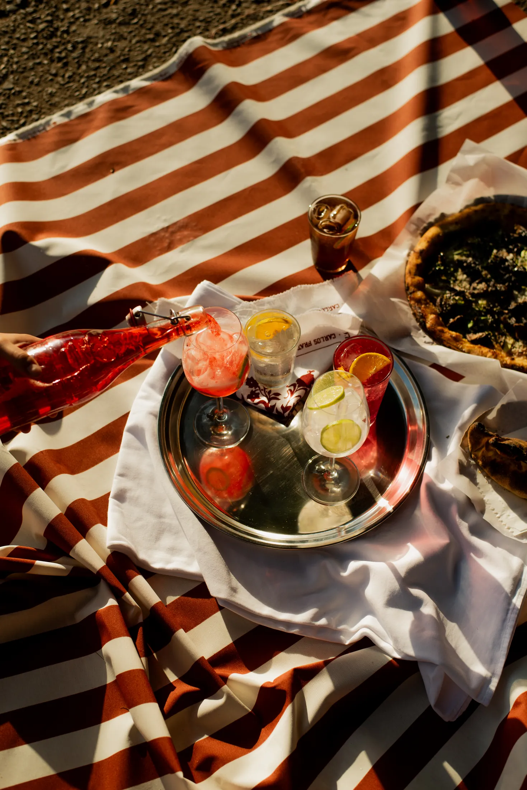
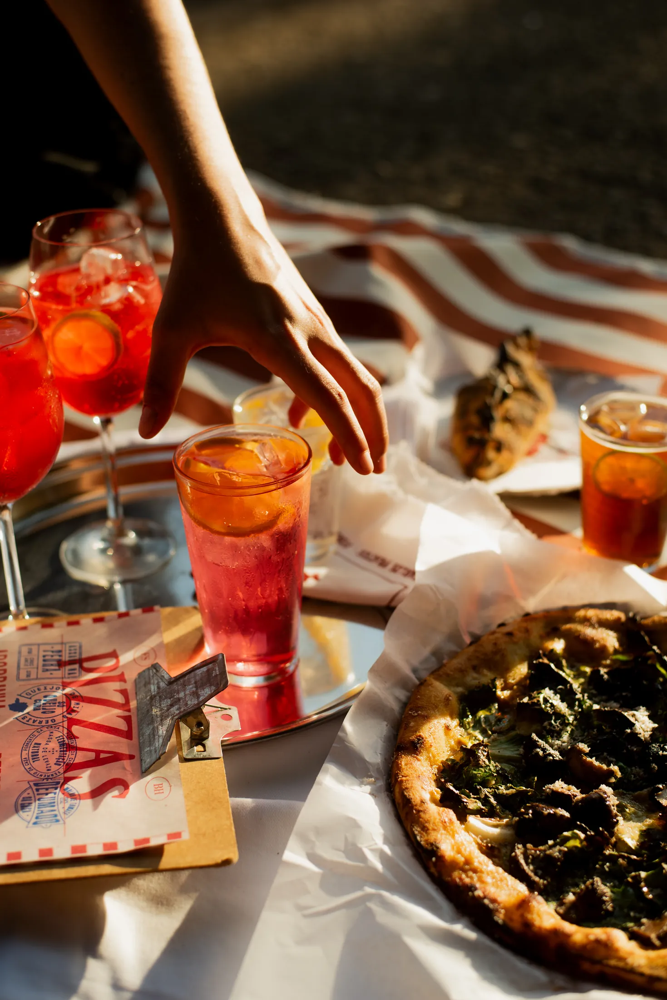

gastronomia · 2025
Forno da Saudade
mesa, forno e encontro. 5 imagens organizadas em um ensaio completo, com entrada direta para contato e leitura clara do projeto.





mesa, forno e encontro. 5 imagens organizadas em um ensaio completo, com entrada direta para contato e leitura clara do projeto.




